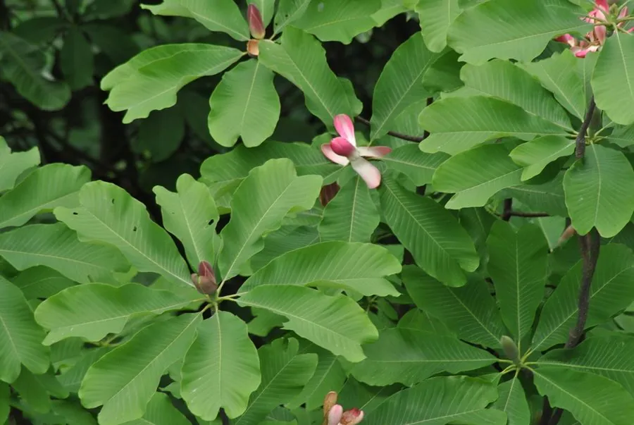

乔木 · 植物界
凹叶厚朴 Magnolia officinalis

木兰科木兰属落叶乔木，叶先端凹缺成两裂，树皮为著名中药“厚朴”，是中国特有的药用与观赏树种。
- 分类
- 门被子植物门纲木兰纲目木兰目科木兰科属木兰属
- 栖息环境
- 海拔 300–1500 米的山地林中，喜温暖湿润、多云雾的气候
- 地理分布
- 中国四川、湖北、湖南、江西、安徽、浙江、福建、广西、贵州等地
- 保护级别
- 中国国家二级保护野生植物；野生大树因剥皮入药而稀少
物种志
凹叶厚朴为落叶乔木，高可达 15 米，树皮厚、灰褐色，小枝粗壮。叶片大，倒卵形，长 20–45 厘米，先端凹缺成两裂，下面被白粉，侧脉 20–30 对。花先叶开放，单生枝顶，白色、芳香，直径 10–15 厘米，花被片 9–12 枚；聚合果圆柱形，长 10–13 厘米，成熟时开裂露出红色种子。
本种为中国特有种，分布于四川、湖北、湖南、江西、安徽、浙江、福建、广西、贵州等地，生于海拔 300–1500 米的山地林中，喜温暖湿润、多云雾的气候与肥沃排水良好的酸性土壤。树皮为著名中药“厚朴”，含厚朴酚与和厚朴酚，能燥湿消痰、下气除满，因剥皮入药，野生大树常被砍伐，资源日益稀少，被列为国家二级保护野生植物。它花大而香，也可作园林观赏树。
形态与习性
- 株高可达 15 米，树皮厚、灰褐色
- 花期4–5 月，先花后叶，花白色芳香
- 果期9–10 月，聚合果圆柱形
- 光照喜光，幼树稍耐阴
- 水分喜湿润多雾，怕积水
- 土壤深厚肥沃、排水良好的酸性黄壤
- 主要用途树皮入药（厚朴）、园林观赏与用材
趣味知识
- 凹叶厚朴的叶片先端凹缺成两裂，这是它区别于普通厚朴最直观的特征。
- 中药“厚朴”即取自它的树皮，药材需生长十余年以上的植株才能剥取。
- 厚朴皮含有厚朴酚与和厚朴酚，具有抗菌、抗炎与肌肉松弛作用。
- 由于连年剥皮采伐，野生凹叶厚朴大树已十分少见，被列为国家二级保护植物。